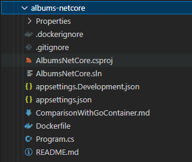

Building a Container Image
This page describes how to build a container image using K2s.
K2s internally uses Buildah (on Linux) and Docker (on Windows) for building container images.
Container Runtime and Build Tool
Windows node:
- containerd - Used as the container runtime for the Windows node.
- Docker - Used only for building container images on Windows.
Linux node:
- CRI-O - Used as the container runtime on Linux.
- Buildah - Used only for building container images on Linux.
Usage:
Dockerfile
The steps and methods to build a container are numerous. Containers can be build in different languages, they can need different compilers with different options and typically, each container needs a specific basis (Windows/Linux, etc.) and a specific amount of data to be packed in the container.
This specification is defined in a unified manner in a Dockerfile (and this is also the real name of the file). This ASCII file has a standard content originally defined by Docker, but grown to an implicit standard and therefore reused by other building infrastructure like the containerd.
To build a container, you must provide such a Dockerfile and store it beside your code. The tooling described below will use this file to build the container by default. Additionally, you can use also use a Dockerfile present in a different location than your code by using --dockerfile parameter.
Building a Windows Container Image
If you need to build a Windows-based application (e.g. a .NET application), you might have the following project structure:

k2s image build --input-folder C:\s\examples\albums-netcore --windows --image-name local/example.albums-win --image-tag 99 -o
In the above example, k2s CLI is being used with build option to build a .NET application under a particular folder with image name and tag accordingly. It is important to mention the --windows flag while building Windows-based container images.
⏳ [12:11:00] Successfully built ec44caa68e5e
⏳ [12:11:00] Successfully tagged local/example.albums-win:99
⏳ [12:11:00] Output of checking if the image local/example.albums-win:99 is now available in docker:
⏳ [12:11:00] REPOSITORY TAG IMAGE ID CREATED SIZE
⏳ [12:11:00] local/example.albums-win 99 ec44caa68e5e Less than a second ago 361MB
⏳ [12:11:00] C:\ws\k2s\Temp\ExportedImages
⏳ [12:11:00] Saving image local/example.albums-win:99 temporarily as C:\ws\k2s\Temp\ExportedImages\BuiltImage.tar to import it afterwards into containerd...
⏳ [12:11:16] ...saved.
⏳ [12:11:16] Importing image local/example.albums-win:99 from C:\ws\k2s\Temp\ExportedImages\BuiltImage.tar into containerd...
⏳ [12:11:19] unpacking docker.io/local/example.albums-win:99 (sha256:6a4c30f6f25f7ba959e904fbbf3d1193fd1a1ba8027cbf414f456704bb3ec4b9)...
⏳ [12:11:20] Loaded image: local/example.albums-win:99
⏳ [12:11:20] ...imported
⏳ [12:11:20] Removing temporarily created file C:\ws\k2s\Temp\ExportedImages\BuiltImage.tar...
⏳ [12:11:20] ...removed
⏳ [12:11:21] The built image 'local/example.albums-win:99' is available in the containerd's local repository.
⏳ [12:11:21] Total duration: 00:00:59
⏳ [12:11:21] Converting message of type 'CmdResult' to JSON..
⏳ [12:11:21] message converted
⏳ [12:11:21] JSON compressed
⏳ [12:11:21] JSON base64 encoded
⏳ [12:11:21] message sent via CLI
SUCCESS 'image build' completed in 1m6.2240613s
Please see 'C:\var\log\k2s.log' for more information
As we are building container images using Docker, built images should be available for containerd and this is achieved via import of built images to the containerd repository.
After a successful build command, the image should be available in the containerd repository and can be queried with k2s CLI:
k2s image ls
Available Images
┌───────────────────────────────────────────────────────────────────────────────────────────────────────────┐
| ImageId | Repository | Tag | Node | Size |
| ec44caa68e5e6 | docker.io/local/example.albums-win | 99 | imw1026986c | 204MB |
└───────────────────────────────────────────────────────────────────────────────────────────────────────────┘
For running Windows Pods in K8s, please always specify the Node selector for Windows, as well as a specific Toleration in your YAML file:
nodeSelector:
kubernetes.io/os: windows
tolerations:
- key: "OS"
operator: "Equal"
value: "Windows"
effect: "NoSchedule"
Building a Linux Container Image
If you need to build a Linux-based application (e.g. a Go-based application), you might have the following project structure:

k2s image build --input-folder C:\s\examples\albums-golang --image-name local/example.albums-golang --image-tag 99 -o
In the above example, the k2s CLI is used with build command to build a Go-based application under a particular folder with image name and tag set accordingly.
Pushing to a Registry
In order to push your container image, you need to label it with the appropriate version number and push it to the registry:
k2s image build --input-folder C:\s\examples\albums-netcore --windows --image-name local/example.albums-win --image-tag 99 -p -o
Note
Make sure the registry you want to push to is configured (see Adding a Container Registry).
The --push or -p option is required for pushing container image to the configured registry.
Then, you need to update the YAML file with the newly published version:
spec:
imagePullSecrets:
- name: regcred
containers:
- name: albums-win
image: docker.io/local/example.albums-win:99
args: ["--v", "4"]
Specifying the Dockerfile Explicitly
It is possible to specify a Dockerfile that is not present in the same location as your source to build the container image. This can be achieved by specifying the path to the Dockerfile with the --dockerfile or -f parameter:
k2s image build --input-folder C:\s\examples\albums-golang --dockerfile C:\Dockerfile --image-name local/example.albums-golang --image-tag 99 -o
If the file C:\Dockerfile does not exist, the build command will fallback to the Dockerfile beside your code, if present. If it is missing, the command will fail.
Note
When specifying the Dockerfile, it is possible to use relative paths:
k2s image build --input-folder C:\s\examples\albums-golang --dockerfile ..\..\Dockerfile --image-name local/example.albums-golang --image-tag 99 -o
In this case, the path to the Dockerfile is resolved to the current working directory. If the Dockerfile is not found after the path is resolved, the the Dockerfile, if present, beside your code is used. Otherwise, the command fails.
Specifying Build Arguments
Build arguments are a great way to add flexibility to your container image builds. You can pass build argument at build-time and a default value can be specified to be used as a fallback:
ARG BaseImage=alpine:latest
FROM ${BaseImage}
COPY servicelin /bin
RUN ["chmod", "777", "./bin/servicelin"]
ENTRYPOINT ["/bin/servicelin"]
Above is a Dockerfile which has the build argument BaseImage. If the build argument is not set via k2s image build, the default value alpine:latest is used.
You can specify the build argument using --build-arg parameter. In this example, the base image can be set to a Debian version:
Multiple Build Arguments
It is also possible to supply multiple build arguments.
For example, if your Dockerfile has two build arguments BaseImage and CommitId:
ARG BaseImage=alpine:latest
ARG CommitId=latest
FROM ${BaseImage}
LABEL "Commit-Id"=${CommitId}
COPY servicelin /bin
RUN ["chmod", "777", "./bin/servicelin"]
ENTRYPOINT ["/bin/servicelin"]
Then, we can supply the values to these build arguments using the following command:
k2s image build -n k2s.io/servicelin -t 1 --build-arg="BaseImage=debian:latest" --build-arg="CommitId=a5e04dafb1d235a81d3332a6535b63e7"
Here, we use the parameter --build-arg twice to supply the values of both the build arguments.
For running Linux Pods in K8s please always specify the Node selector for Linux:
k2s build Internals
Under the hood of k2s build is the PowerShell script Build-Image.ps1 (and its batch-wrapper, both part of the K2s setup) to automate the container build. A container image will be created in your local repository.
In general, k2s build supports Linux (default) as well as Windows containers.
There are also two types of a Dockerfile supported:
Dockerfile- The entire build chain is executed as part of the image build process resulting in a container image.Dockerfile.Precompile- The content of the working directory is being build first and the container image is created afterwards (which is the default behavior if both are files are available).